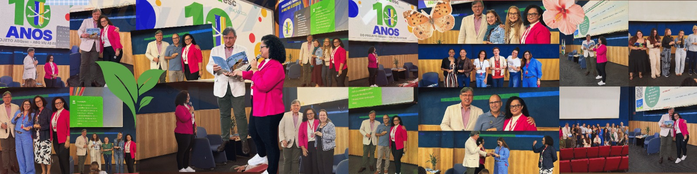

Educação que floresce em cada encontro.
Pedagoga e doutora em Educação em Ciências e Saúde pela UFRJ, sou docente na pós-graduação da Afya Unigranrio e dedico minha pesquisa a transformar as perguntas das infâncias em ciência, formação docente e literatura.

Sobre mim
Sou pedagoga, mestre em Ensino de Ciências pelo IFRJ e doutora em Educação em Ciências e Saúde pela UFRJ. Minha formação também reúne especializações em Gestão Escolar, Educação Psicomotora e Docência na Educação Infantil.
Atuo no Programa de Pós-graduação em Ensino de Ciências e Saúde da Afya Universidade Unigranrio e na Educação Básica de Duque de Caxias. Minha pesquisa se encontra com as experiências das crianças, a formação docente, os letramentos, a literatura infantil, as questões sociocientíficas e o cuidado com o mundo que compartilhamos.

Formação acadêmica
Do magistério ao doutorado — os estudos que sustentam a pesquisa, a escrita e a docência.
Livros
Histórias que convidam crianças e adultos a imaginar, perguntar e cuidar.
Nenhum livro cadastrado ainda.
Publicações
Investigações e reflexões sobre ensino de Ciências, saúde, formação de professores, literatura infantil e educação ambiental.
Nenhuma publicação encontrada.
Projetos
Ações que aproximam universidade, escola e comunidade e reconhecem as crianças como participantes da vida coletiva.
Nenhum projeto encontrado.
Produtos Educacionais
Materiais que levam a pesquisa para situações concretas de ensino e aprendizagem.
Nenhum produto educacional encontrado.
EDUCAS
Questões Sociocientíficas: Discursos e Prática no Ensino de Ciências e Saúde. Um espaço de investigação e troca entre pessoas que estudam educação, ciência, saúde e os desafios do nosso tempo.
O grupo articula formação, pesquisa e extensão para produzir conhecimentos comprometidos com os territórios e com as infâncias.
Conheça a trajetória acadêmica
Ideias crescem quando encontram companhia.
Para pesquisa, orientação, parcerias acadêmicas ou conversas sobre Ensino de Ciências e Saúde, envie uma mensagem.